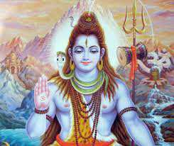

Mahadev 🙏🙏

- The word Shiva (शिव) has been derived by reversing the letters of the word vash (वश्).
Vash means to enlighten; thus the one who enlightens is Shiva. Shiva is absolute, self-radiant.
He remains radiant and also illuminates the universe.
- At the time of creation and activity of the universe basically there are three thoughts – absolute purity,
absolute knowledge and absolute spiritual practice. The deity who possesses all these three attributes is
referred to as the deity of all deities, Mahadev.
- Shiva’s left eye is the first eye, the right eye is the second and the verticle one in the subtle form,
just above the midpoint of the eyebrows is the third one. The upper eye is a representation of the combined
energy of both the right and left eyes. It is also the greatest seat (mahapith) of extrasensory energy and is
endowed with names such as Jyotirmath, Vyaspith, etc.
- Chandra, Arka and Vaishvanar are the three eyes of Lord Shankar. Arka is the sun from the ajanaj region
while Vaishvanar is the sun from the karmadev region. Therefore Shankar can view everywhere in the universe.
(Information on the ajanaj and karmadev regions is given in ‘Science of Spirituality : Chapter 25 –
Composition of the Universe’.)
- Shankar is three-eyed means He can perceive events in the past, present and future as well.
- According to the science of Yoga the third eye means the Sushumna channel (nadi).
VIDEO
